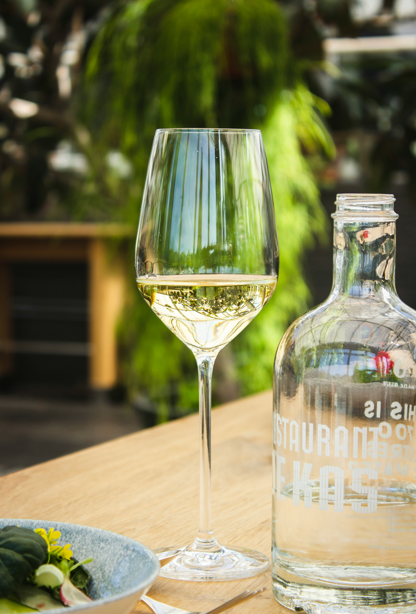

Una copa de Vino
Nos dirigimos tanto a los amantes como a los que no tanto, y quieren ir descubriendo un poco de este mundo.
Aca podras encontrar un vino para ocasiones especiales, acompañamientos de diferenctes platos o simplemente una copa de vino para relajar despues de un dia agotador de trabajo
Los mas elegidos por Los Argentinos

Malbec
Con un color más violácea y más oscuras, de cuerpo medio.
Podemos conbinarlo con platos que contengan canres magras, pastas y quesos semiduros.

Cabernet Sauvignon
Con un color granate medio, no tan violeta, más potente y con más cuerpo.
Podemos combinarlo con carnes que contengas mas grasas, parrillas, platos caloricos y/o más especiados.

Merlot
Con color rubí brillante o un granate claro, con cuerpo medio.
Podemos combinarlo con carnes de caza, y quesos duros.
este es un mensaje para chequear el git